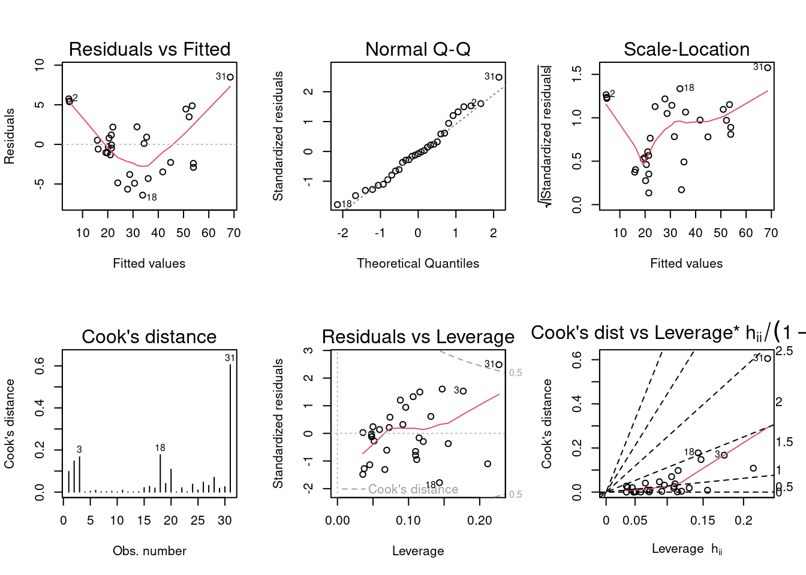
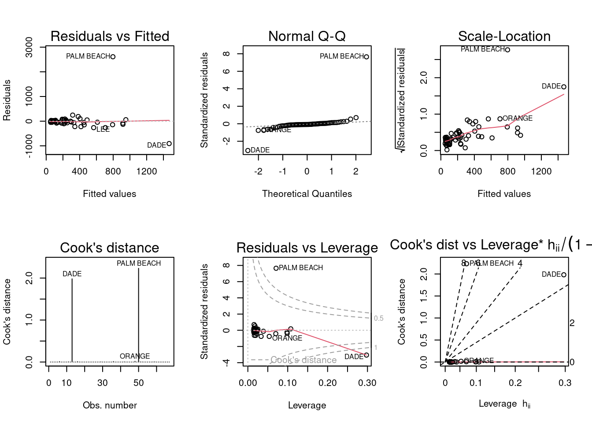

Code
library(tidyverse)
library(alr4)
library(smss)
knitr::opts_chunk$set(echo = TRUE)library(tidyverse)
library(alr4)
library(smss)
knitr::opts_chunk$set(echo = TRUE)house.selling.priceError in eval(expr, envir, enclos): object 'house.selling.price' not foundFor backward elimination, which variable would be deleted first? Why?
the variables “Beds” would be deleted first because it presents the highest p-value
For forward selection, which variable would be added first? Why?
The variables “New” and “Size” would be added first as they present the smallest p-values. It is important to note that “Size” would be added before “New” as is has a higher correlation with “Price”
Why do you think that BEDS has such a large P-value in the multiple regression model, even though it has a substantial correlation with PRICE?
“Beds” may have a larger p-value because there could be many interaction terms. In addition, the sample size may have to be increased to yield a more significant p-value.
a <- lm(Price~ .-Taxes - case, data = house.selling.price)Error in is.data.frame(data): object 'house.selling.price' not foundsummary(a)Error in summary(a): object 'a' not foundAIC(a)Error in AIC(a): object 'a' not foundBIC(a)Error in BIC(a): object 'a' not foundb <- lm(Price~ .- Taxes - case- Beds, data = house.selling.price)Error in is.data.frame(data): object 'house.selling.price' not foundsummary(b)Error in summary(b): object 'b' not foundAIC(b)Error in AIC(b): object 'b' not foundBIC(b)Error in BIC(b): object 'b' not foundc <- lm (Price~ .- Taxes - case- Beds - Baths, data = house.selling.price)Error in is.data.frame(data): object 'house.selling.price' not foundsummary(c)Error in object[[i]]: object of type 'builtin' is not subsettableAIC(c)Error in UseMethod("logLik"): no applicable method for 'logLik' applied to an object of class "function"BIC(c)Error in UseMethod("logLik"): no applicable method for 'logLik' applied to an object of class "function"d <- lm (Price~ .- Taxes - case- Beds - New, data = house.selling.price)Error in is.data.frame(data): object 'house.selling.price' not foundsummary(d)Error in summary(d): object 'd' not foundAIC(d)Error in AIC(d): object 'd' not foundBIC(d)Error in BIC(d): object 'd' not foundtrees Girth Height Volume
1 8.3 70 10.3
2 8.6 65 10.3
3 8.8 63 10.2
4 10.5 72 16.4
5 10.7 81 18.8
6 10.8 83 19.7
7 11.0 66 15.6
8 11.0 75 18.2
9 11.1 80 22.6
10 11.2 75 19.9
11 11.3 79 24.2
12 11.4 76 21.0
13 11.4 76 21.4
14 11.7 69 21.3
15 12.0 75 19.1
16 12.9 74 22.2
17 12.9 85 33.8
18 13.3 86 27.4
19 13.7 71 25.7
20 13.8 64 24.9
21 14.0 78 34.5
22 14.2 80 31.7
23 14.5 74 36.3
24 16.0 72 38.3
25 16.3 77 42.6
26 17.3 81 55.4
27 17.5 82 55.7
28 17.9 80 58.3
29 18.0 80 51.5
30 18.0 80 51.0
31 20.6 87 77.0fit a multiple regression model with the Volume as the outcome and Girth and Height as the explanatory variables
e<- lm(Volume ~ Girth + Height, data = trees)
summary(e)
Call:
lm(formula = Volume ~ Girth + Height, data = trees)
Residuals:
Min 1Q Median 3Q Max
-6.4065 -2.6493 -0.2876 2.2003 8.4847
Coefficients:
Estimate Std. Error t value Pr(>|t|)
(Intercept) -57.9877 8.6382 -6.713 2.75e-07 ***
Girth 4.7082 0.2643 17.816 < 2e-16 ***
Height 0.3393 0.1302 2.607 0.0145 *
---
Signif. codes: 0 '***' 0.001 '**' 0.01 '*' 0.05 '.' 0.1 ' ' 1
Residual standard error: 3.882 on 28 degrees of freedom
Multiple R-squared: 0.948, Adjusted R-squared: 0.9442
F-statistic: 255 on 2 and 28 DF, p-value: < 2.2e-16Run regression diagnostic plots on the model. Based on the plots, do you think any of the regression assumptions is violated?
par(mfrow = c (2,3)); plot(e,which = 1:6)
The residual vs fitted and scale location could present a more uniform in their curve.
Run simple linear regression model where the Buchanan vote is the outcome and the Bush vote is the explanatory variable. Produce the regression diagnostic plots. Is Palm Beach County an outlier based on the diagnostic plots? Why or why not?
florida Gore Bush Buchanan
ALACHUA 47300 34062 262
BAKER 2392 5610 73
BAY 18850 38637 248
BRADFORD 3072 5413 65
BREVARD 97318 115185 570
BROWARD 386518 177279 789
CALHOUN 2155 2873 90
CHARLOTTE 29641 35419 182
CITRUS 25501 29744 270
CLAY 14630 41745 186
COLLIER 29905 60426 122
COLUMBIA 7047 10964 89
DADE 328702 289456 561
DE SOTO 3322 4256 36
DIXIE 1825 2698 29
DUVAL 107680 152082 650
ESCAMBIA 40958 73029 504
FLAGLER 13891 12608 83
FRANKLIN 2042 2448 33
GADSDEN 9565 4750 39
GILCHRIST 1910 3300 29
GLADES 1420 1840 9
GULF 2389 3546 71
HAMILTON 1718 2153 24
HARDEE 2341 3764 30
HENDRY 3239 4743 22
HERNANDO 32644 30646 242
HIGHLANDS 14152 20196 99
HILLSBOROUGH 166581 176967 836
HOLMES 2154 4985 76
INDIAN RIVER 19769 28627 105
JACKSON 6868 9138 102
JEFFERSON 3038 2481 29
LAFAYETTE 788 1669 10
LAKE 36555 49963 289
LEE 73560 106141 305
LEON 61425 39053 282
LEVY 5403 6860 67
LIBERTY 1011 1316 39
MADISON 3011 3038 29
MANATEE 49169 57948 272
MARION 44648 55135 563
MARTIN 26619 33864 108
MONROE 16483 16059 47
NASSAU 6952 16404 90
OKALOOSA 16924 52043 267
OKEECHOBEE 4588 5058 43
ORANGE 140115 134476 446
OSCEOLA 28177 26216 145
PALM BEACH 268945 152846 3407
PASCO 69550 68581 570
PINELLAS 199660 184312 1010
POLK 74977 90101 538
PUTNAM 12091 13439 147
ST. JOHNS 19482 39497 229
ST. LUCIE 41559 34705 124
SANTA ROSA 12795 36248 311
SARASOTA 72854 83100 305
SEMINOLE 58888 75293 194
SUMTER 9634 12126 114
SUWANNEE 4084 8014 108
TAYLOR 2647 4051 27
UNION 1399 2326 26
VOLUSIA 97063 82214 396
WAKULLA 3835 4511 46
WALTON 5637 12176 120
WASHINGTON 2796 4983 88g <- lm(formula = Buchanan ~ Bush, data = florida)
summary(g)
Call:
lm(formula = Buchanan ~ Bush, data = florida)
Residuals:
Min 1Q Median 3Q Max
-907.50 -46.10 -29.19 12.26 2610.19
Coefficients:
Estimate Std. Error t value Pr(>|t|)
(Intercept) 4.529e+01 5.448e+01 0.831 0.409
Bush 4.917e-03 7.644e-04 6.432 1.73e-08 ***
---
Signif. codes: 0 '***' 0.001 '**' 0.01 '*' 0.05 '.' 0.1 ' ' 1
Residual standard error: 353.9 on 65 degrees of freedom
Multiple R-squared: 0.3889, Adjusted R-squared: 0.3795
F-statistic: 41.37 on 1 and 65 DF, p-value: 1.727e-08par(mfrow = c(2, 3)); plot(g, which = 1:6)
The diagnostic plots suggest that “Palm Beach” is an outlier. The “Palm Beach” residuals vs fitted plot show that the residuals are large, with a uniform and linear shape. This indicates with the “Palm Beach” outlier being nowhere near the rest of the residuals, as an outlier.
Take the log of both variables (Bush vote and Buchanan Vote) and repeat the analysis in (a). Does your findings change?
h<- lm(log(Buchanan) ~ log(Bush), data = florida)
summary(h)
Call:
lm(formula = log(Buchanan) ~ log(Bush), data = florida)
Residuals:
Min 1Q Median 3Q Max
-0.96075 -0.25949 0.01282 0.23826 1.66564
Coefficients:
Estimate Std. Error t value Pr(>|t|)
(Intercept) -2.57712 0.38919 -6.622 8.04e-09 ***
log(Bush) 0.75772 0.03936 19.251 < 2e-16 ***
---
Signif. codes: 0 '***' 0.001 '**' 0.01 '*' 0.05 '.' 0.1 ' ' 1
Residual standard error: 0.4673 on 65 degrees of freedom
Multiple R-squared: 0.8508, Adjusted R-squared: 0.8485
F-statistic: 370.6 on 1 and 65 DF, p-value: < 2.2e-16par(mfrow = c (2,3)); plot(h,which = 1:6)
After the “Buchanan” and “Bush” is lagged, the residuals vs fitted diagnostic plot shows a more uniform and even distribution around the line. Scale location and normal q-q show the residuals also being more uniform and linear.